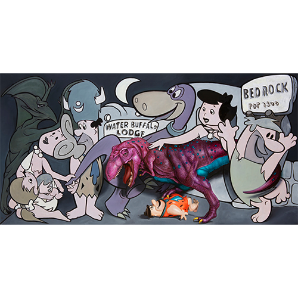

Exhibitions
Ron English: Guernica (New York: Allouche Gallery, September 22–October 19, 2016), exhibition catalogue, PDF, accessed April 5, 2026, https://www.allouchegallery.com/wp-content/uploads/2023/09/Ron-English-Guernica-Catalogue.pdf.
Ron English: Reimagining “Guernica” / La réinvention du “Guernica” (Gernika-Lumo, Bizkaia: Museo de la Paz de Gernika, 2017), exhibition catalogue, digital flip-book, accessed April 4, 2026, https://www.museodelapaz.eus/en/3d-flip-book/ron-english-guernica-berriro-imajinatzen-reimaginando-el-guernica-eng_fr/.
Ron English: Translations (Los Angeles: Allouche Gallery, June 13–July 9, 2024), exhibition catalogue, PDF, accessed April 4, 2026, https://www.allouchegallery.com/wp-content/uploads/2024/05/RON-ENGLISH-TRANSLATIONS-CATALOGUE.pdf.
Literature
Ron English, Original Grin: The Art of Ron English (Paris: Cernunnos, 2019), p. 214. ISBN 978-2374950938.
Notes
This work references Pablo Picasso’s Guernica (1937).